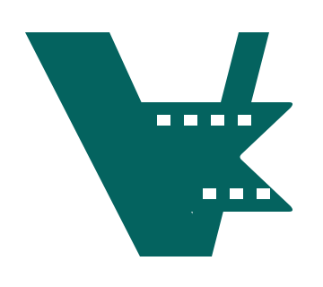

A / Broad overlap
Closest to your new sketch.
A broad front blade covers a slim, straight rear blade.
VIRTUAL CUT / FILM EDGE / ROUND 2
The left blade is thicker and sits in front of the slim right blade. All three keep Film Edge's perforations and notched ribbon.
Closest to your new sketch.
A broad front blade covers a slim, straight rear blade.
A narrower rear blade and a more open stance.
A shorter ribbon exposes more of the overlap.

Gentler corners around the same overlapping V.
The pointed join stays crisp and continuous.